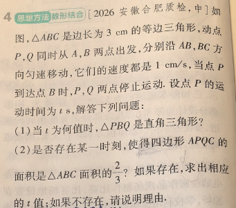
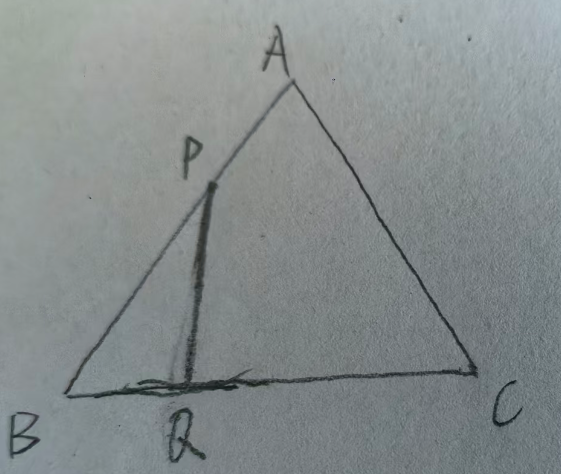
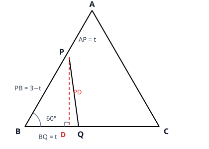

p25 等边三角形双动点：直角三角形与四边形面积
几何综合
等边三角形动点问题30-60-90直角三角形勾股定理判别式
★★★☆

📷 点击查看原图
[2026 安徽合肥质检·中] 如图，△ABC 是边长为 3 cm 的等边三角形，动点 P、Q 同时从 A、B 两点出发，分别沿 AB、BC 方向匀速运动，它们的速度都是 1 cm/s，当点 P 到达点 B 时，P、Q 两点停止运动。设点 P 的运动时间为 t s，解答下列问题：
（1）当 t 为何值时，△PBQ 是直角三角形？
（2）是否存在某一时刻，使得四边形 APQC 的面积是 △ABC 面积的 32？如果存在，求出相应的 t 值；如果不存在，请说明理由。

📌 知识点总结（点击展开／收起）
📌 知识点总结
| 知识点 | 说明 |
|---|
| 动点问题的基本量 | 速度 × 时间 = 路程：AP=t，BQ=t，PB=3−t |
| 等边三角形 | 三边相等、每个内角都是 60∘；三线合一（中线 = 高线 = 角平分线） |
| 30° 所对直角边 = 斜边的一半 | 直角三角形中，30∘ 角所对的直角边等于斜边的一半 |
| 勾股定理 | a2+b2=c2（直角三角形两直角边的平方和等于斜边的平方） |
| 割补法求面积 | 四边形 APQC 的面积 = △ABC 的面积 − △PBQ 的面积 |
| 判别式判断存在性 | Δ<0⇔ 一元二次方程无实数解 ⇔ 这样的 t 不存在 |
✍️ 解题过程
第一步：用 t 表示各线段
两个动点速度都是 1 cm/s，运动时间为 t s，所以走过的路程都等于 t：
AP=t,BQ=t,PB=AB−AP=3−t
注意 t 的取值范围：点 P 到达 B 时停止，所以 0<t≤3。
第二步：（1）问：分析 △PBQ 的直角位置
△PBQ 中，∠B=60∘（等边三角形的内角）。直角三角形只有一个直角，而 ∠B=60∘ 不是直角，所以直角只能是另外两个角：∠BQP 或 ∠BPQ。分两种情况讨论。
情况①：∠BQP=90∘
此时三角形内角和还剩 90∘−60∘=30∘ 给 ∠BPQ，即 ∠BPQ=30∘。
在 Rt△PBQ 中，30∘ 角（∠BPQ）所对的直角边是 BQ，斜边是 BP。由"30∘ 所对的直角边等于斜边的一半"：
BQ=21BP⟹t=21(3−t)
解得 2t=3−t，即 3t=3，所以 t=1。✓（在 0<t≤3 内）
情况②：∠BPQ=90∘
同理，此时 ∠BQP=30∘。30∘ 角（∠BQP）所对的直角边是 BP，斜边是 BQ：
BP=21BQ⟹3−t=21t
解得 6−2t=t，即 3t=6，所以 t=2。✓（在 0<t≤3 内）
✅（1）答案：t=1 或 t=2 时，△PBQ 是直角三角形
第三步：（2）问：割补法转化面积
点 P 在 AB 上、点 Q 在 BC 上，线段 PQ 恰好把 △ABC 切成两部分：△PBQ（含点 B 的小角）和四边形 APQC（其余部分）。所以：
S四边形APQC=S△ABC−S△PBQ
要使四边形 APQC 的面积是 △ABC 面积的 32，就等价于：
S△PBQ=31S△ABC
第四步：作辅助线，用 t 表示 S△PBQ 与 S△ABC
辅助线：过点 P 作 PD⊥BC，垂足为 D（红色虚线）。则 PD 就是 △PBQ 中 BQ 边上的高。

📷 点击查看原图
先求 △ABC 的高：过 A 作 AH⊥BC 于 H。由等边三角形三线合一，H 是 BC 中点，BH=23。在 Rt△ABH 中用勾股定理：
再求 △PBQ 中 BQ 边上的高 PD：在 Rt△PBD 中，∠B=60∘，所以 ∠BPD=30∘。30∘ 角 ∠BPD 所对的直角边是 BD，斜边是 PB，所以 BD=21PB=23−t。再用勾股定理：
于是（以 BQ 为底、PD 为高）：
两个面积的比（3 正好约掉）：
第五步：列方程并判断是否存在
由第四步的等价条件 S△PBQ=31S△ABC，即面积比等于 31：
9t(3−t)=31
两边同乘 9：
t(3−t)=3⟹3t−t2=3⟹t2−3t+3=0
这是一个关于 t 的一元二次方程，计算判别式：
Δ=(−3)2−4×1×3=9−12=−3<0
判别式小于零，方程没有实数解。也就是说，在整个运动过程（0<t≤3）中，不存在任何时刻使 S△PBQ=31S△ABC。
（从图象角度理解：9t(3−t) 的最大值在 t=1.5 时取得，只有 91.5×1.5=41，达不到 31，所以 △PBQ 永远"太小"，四边形 APQC 永远比 32 大。）
✅（2）答案：不存在这样的 t。因为方程 t2−3t+3=0 的判别式 Δ=−3<0，无实数解